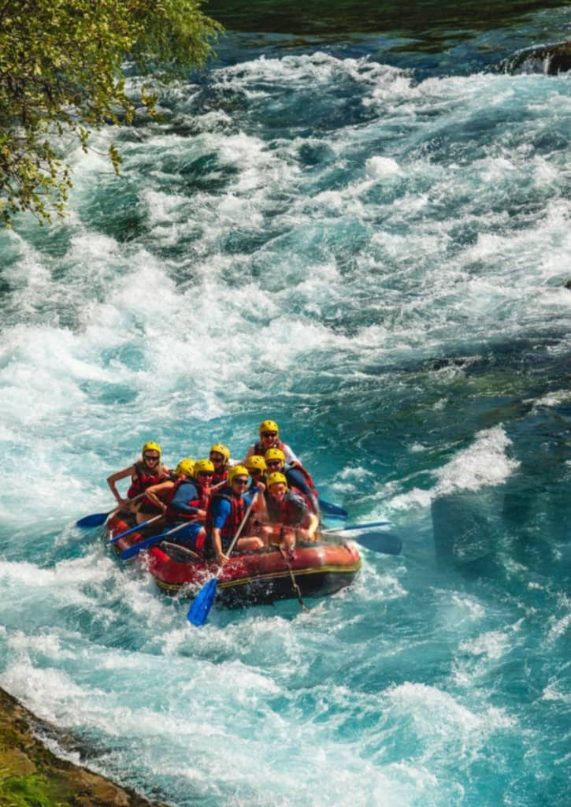

History
Born out of passion for adventure and a love affair with nature, Whiterafting began life as a
homework exercise to place rivers on the global map. It was in 2025 that our journey began,
offering professionally guided rafting tours on some of the most breathtaking waterways. The
venture soon grew to be a brand name in wildrafting synonymous with safety, expertise, and
experience that's nothing short of out-of-the-world.
Over time, we are looking to expanded our operations, adding new routes, upgraded equipment, and
training
expert guides to ensure each trip is fun and safe. Sustainability has also led us to implement
green practices, preserving the pristine environments we travel into.
Whiterafting today continues to call to all kinds of adventurers, ranging from beginning rafters
to seasoned travelers. If you want a heart-pounding whitewater adventure or an idyllic drift
through nature, we are dedicated to providing unique and memorable experiences. Our heritage is
forged in adventure, and our future flows with the tide of exploration.